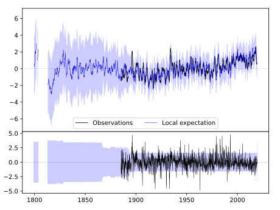
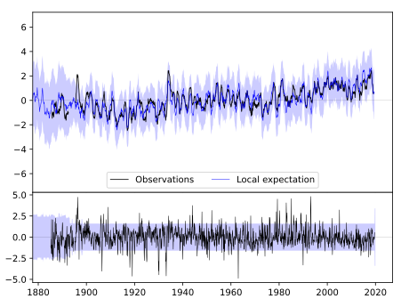
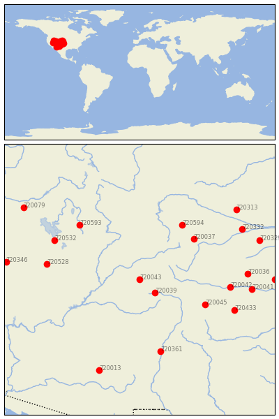

MONTROSE #2 [USA]


| Neighbour | Name | Country | Distance | Lon/Lat | Years |
|---|
| 720043 | MONTROSE #2 | USA | 0 | -107.9, 38.5 | 1885-2019 |
| 720039 | HERMIT 7 ESE | USA | 104 | -107.1, 37.8 | 1893-2019 |
| 720045 | TRINIDAD | USA | 331 | -104.5, 37.2 | 1886-2019 |
| 720037 | FT COLLINS | USA | 334 | -105.1, 40.6 | 1873-2019 |
| 720594 | LARAMIE RGNL AP | USA | 363 | -105.7, 41.3 | 1866-2019 |
| 720593 | EVANSTON 1 E | USA | 408 | -111.0, 41.3 | 1889-2019 |
| 720042 | LAS ANIMAS | USA | 412 | -103.2, 38.1 | 1867-2019 |
| 720361 | LOS LUNAS 3 SSW | USA | 422 | -106.8, 34.8 | 1891-2019 |
| 720528 | DESERET | USA | 424 | -112.7, 39.3 | 1891-2019 |
| 720532 | TOOELE | USA | 438 | -112.3, 40.5 | 1895-2019 |
| 720433 | KENTON | USA | 466 | -103.0, 36.9 | 1893-2019 |
| 720036 | CHEYENNE WELLS | USA | 487 | -102.3, 38.8 | 1889-2019 |
| 720041 | HOLLY | USA | 509 | -102.1, 38.0 | 1893-2019 |
| 720332 | LODGEPOLE | USA | 537 | -102.6, 41.1 | 1893-2019 |
| 720013 | WHITERIVER 1 SW | USA | 555 | -110.0, 33.8 | 1871-2019 |
| 720329 | IMPERIAL | USA | 576 | -101.7, 40.5 | 1890-2019 |
| 720313 | ALLIANCE 1WNW | USA | 582 | -102.9, 42.1 | 1889-2019 |
| 720346 | MCGILL | USA | 604 | -114.8, 39.4 | 1888-2019 |
| 720181 | SCOTT CITY | USA | 609 | -100.9, 38.5 | 1889-2019 |
| 720079 | OAKLEY | USA | 653 | -113.9, 42.2 | 1893-2019 |